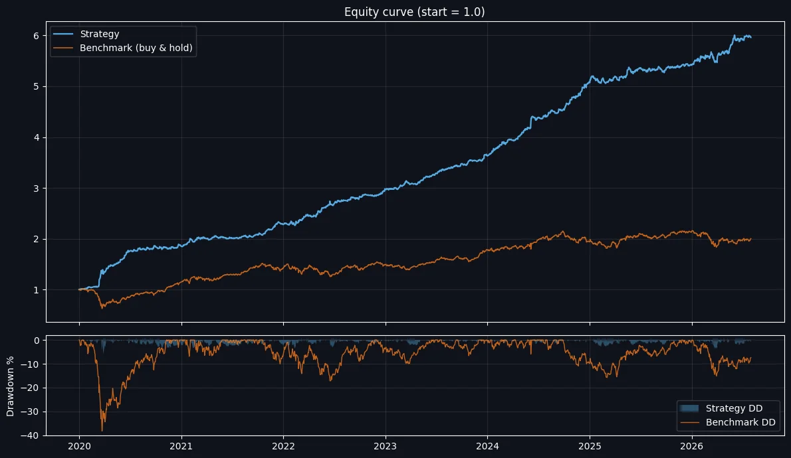

Hawkes intraday momentum on NIFTY 50
The original intraday strategy: stay out of sideways markets, and ride the trend only when volatility deviates enough to signal a real move.

Thesis
Intraday direction depends on volatility. The idea is simple: measure how far volatility deviates from normal. When the deviation crosses a threshold, treat it as a genuine opportunity and ride the trend. When volatility is low and unchanged, stay out, even if the market looks like it is trending.
That one filter removes most of the sideways chop that kills intraday trend systems.
Method
- Bar energy. Each bar's range is normalised by its recent volatility and squared, so a bar scores high only when it is unusually active for that moment.
- Hawkes intensity. Energy feeds an exponential-decay accumulator,
λt = κ · Σ e−κ(t−s) xs. Bursts of activity excite λ; quiet bars let it decay. - Trade the jump. A position opens only when the change in λ exceeds a threshold taken from an expanding quantile of the day so far. The threshold never sees future bars.
- Direction and exit. A trend filter sets long or short; an ATR-based bracket with a trailing stop manages the exit.
This is deliberately a small rule set: a volatility filter, a trend filter and an ATR bracket. Drawdown control and win rate could be pushed further, but I add rules only when they survive out-of-sample tests.
How I would trade it
Suited to debit spreads: risk is defined up front, and a directional move large enough to trigger the signal usually pays for the time decay.
Full statistics
Backtest figures, net of modelled costs. Not live performance.
Performance
- CAGR
- 31.66%+4,597.45 pts / year
- Total return
- 510.78%+30,246.89 pts
- Sharpe
- 2.91Volatility 9.79%
- Sortino
- 6.15
- Calmar
- 5.33CAGR / max DD
- Max drawdown
- −5.94%−807.67 pts
- Longest drawdown
- 79 days
Trade efficiency
- Trades
- 2,40330.4 per month
- Win rate
- 46.4%1,116 / 2,403
- Profit factor
- 1.62
- Payoff ratio
- 1.86+0.433% / −0.232%
- Average trade
- +0.077%12.59 pts
Long vs short
- Long trades
- 1,10245.9% of trades
- Short trades
- 1,30154.1% of trades
- Largest win
- +9.354%+852.20 pts
- Largest loss
- −2.207%−175.86 pts